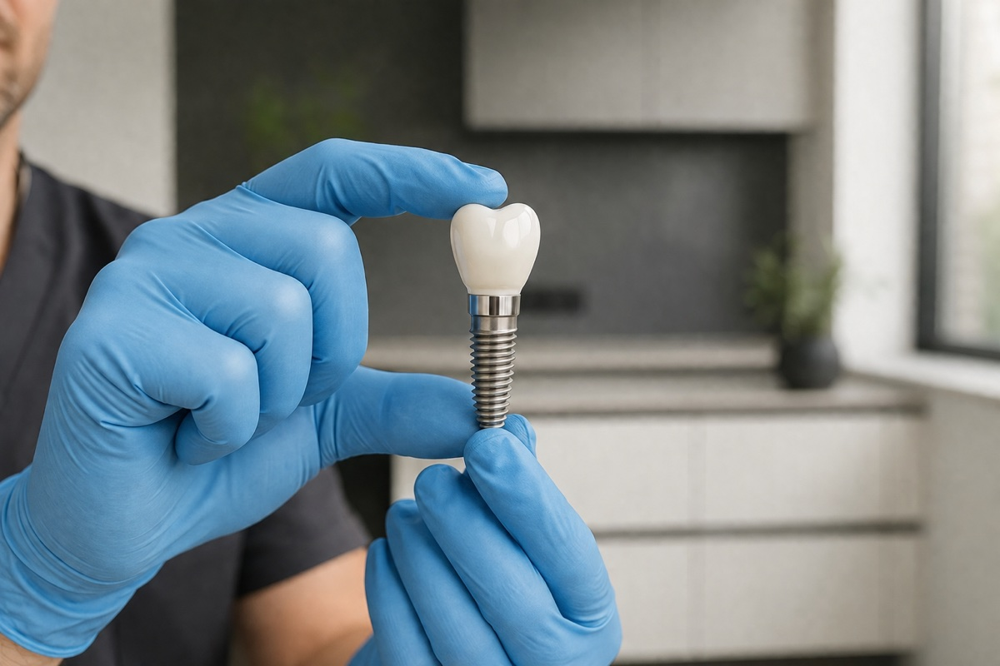
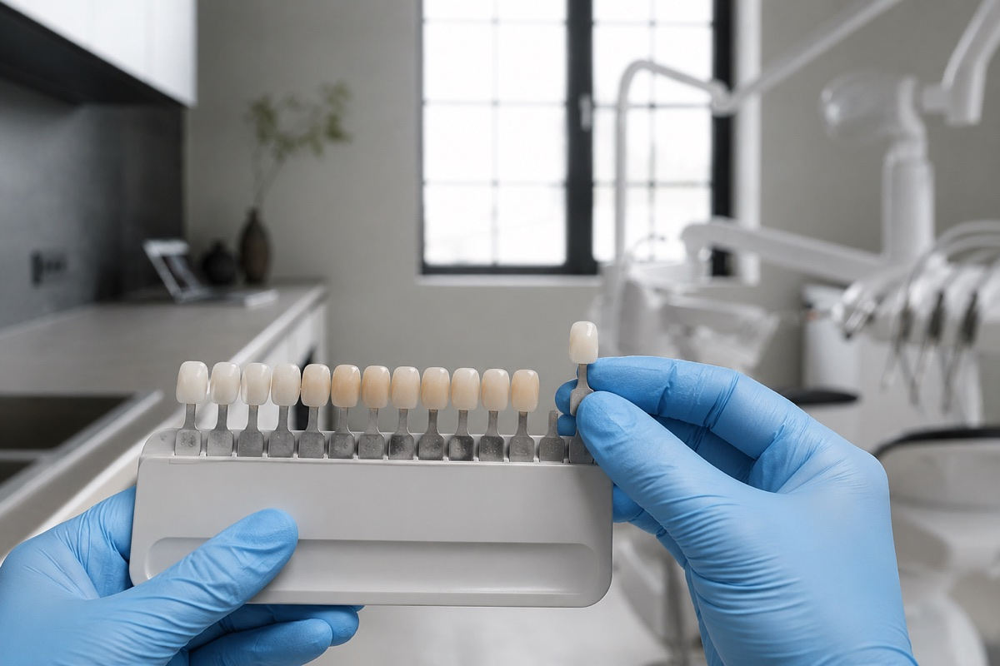
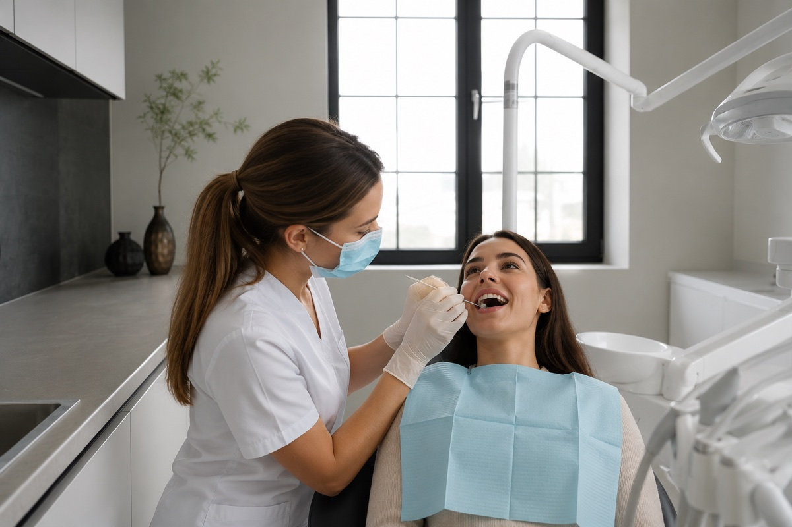
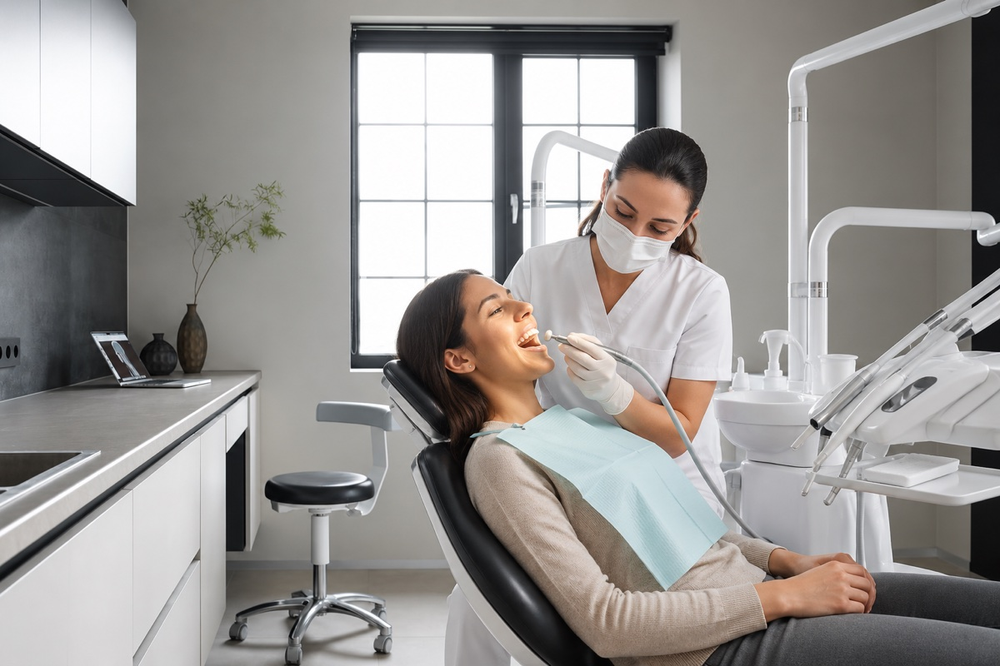
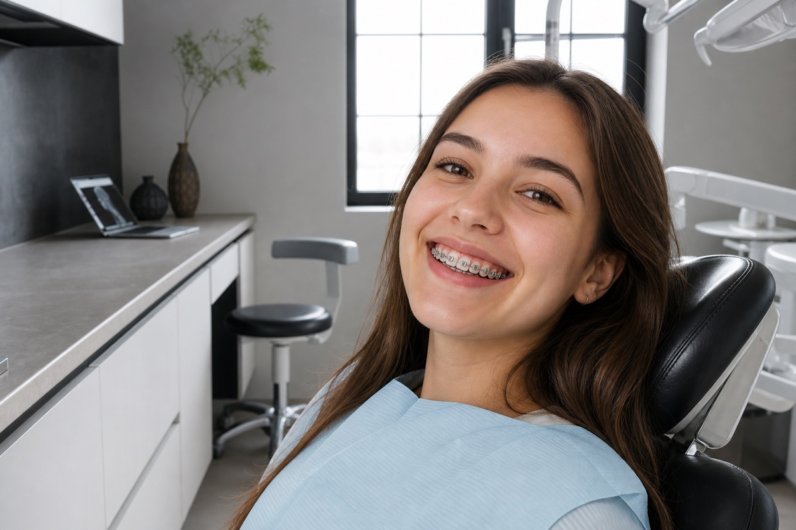
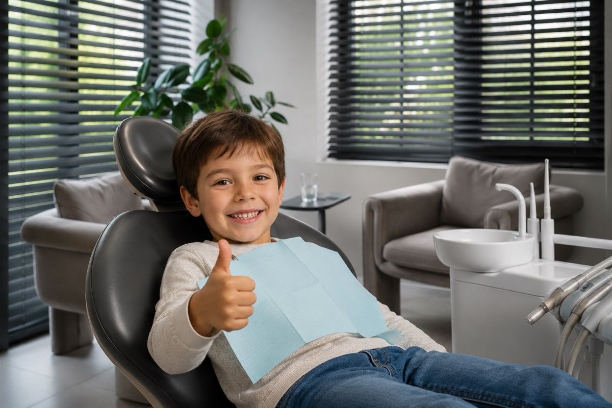

Имплантация
Восстановление утраченных зубов имплантатами MIS и Dentium с 3D-планированием. Долговечный и естественный результат.
Подробнее →Полный спектр стоматологической помощи для взрослых и детей: от профилактики и лечения до имплантации и сложного протезирования. Перед лечением вы получаете понятный план с этапами, сроками и стоимостью.

Восстановление утраченных зубов имплантатами MIS и Dentium с 3D-планированием. Долговечный и естественный результат.
Подробнее →
Коронки, мосты и виниры из керамики, диоксида циркония и металлокерамики. Возвращаем форму и жевательную функцию.
Подробнее →
Щадящее лечение кариеса, пульпита и периодонтита с максимальным сохранением тканей зуба. Без боли.
Подробнее →
Ультразвук, Air Flow и полировка эмали. Профилактика кариеса и заболеваний дёсен каждые 3–6 месяцев.
Подробнее →
Профессиональное отбеливание эмали на 4–8 тонов за один визит. Безопасный протокол с защитой и реминерализацией.
Подробнее →
Металлические, керамические и сапфировые брекеты, прозрачные элайнеры. Исправление прикуса у детей и взрослых.
Подробнее →
Бережное лечение и профилактика молочных и постоянных зубов в атмосфере доверия — без страха и стресса.
Подробнее →Восстанавливаем один зуб или весь зубной ряд при полном отсутствии зубов. Перед операцией проводим компьютерную томографию и цифровое планирование, при необходимости — костную пластику или синус-лифтинг.
Возвращаем форму, цвет и жевательную функцию зубов. Работаем с керамикой, диоксидом циркония и металлокерамикой — материал подбираем под клиническую задачу и эстетику улыбки.
Щадящее лечение кариеса, пульпита и периодонтита с максимальным сохранением тканей зуба. Используем современные анестетики и контролируем ваше состояние на каждом этапе.
Снимаем зубной камень и налёт ультразвуком и Air Flow, полируем эмаль и насыщаем её минералами. Рекомендуем процедуру каждые 3–6 месяцев для профилактики кариеса и заболеваний дёсен.
Исправляем прикус и выравниваем зубы брекет-системами и прозрачными элайнерами. Подбираем комфортную систему лечения под каждый случай и возраст.
Создаём для маленьких пациентов спокойную атмосферу доверия. Бережно лечим молочные и постоянные зубы, учим правильной гигиене и проводим профилактику.
Запишитесь на консультацию — врач осмотрит полость рта и составит понятный план лечения.